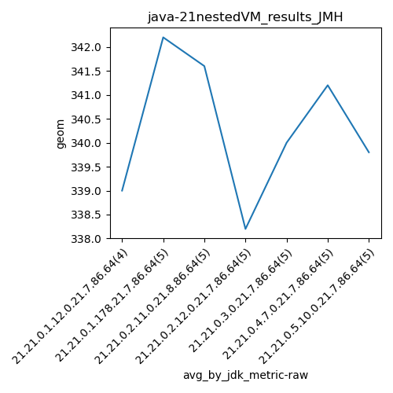

java-21 JMH
Context at bottom
/home/jvanek/git/benchmarks-in-nested-virtualisation-toolchain/final_results/nestedVM_results/nestedVM_results_J2DBENCH
java-21
JMH
/home/jvanek/git/benchmarks-in-nested-virtualisation-toolchain/final_results/nestedVM_results/nestedVM_results_RADARGUNs3
java-21
JMH
/home/jvanek/git/benchmarks-in-nested-virtualisation-toolchain/final_results/nestedVM_results/nestedVM_results_DACAPO
java-21
JMH
/home/jvanek/git/benchmarks-in-nested-virtualisation-toolchain/final_results/nestedVM_results/nestedVM_results_JMH
java-21
JMH
nestedVM_results_JMH
final score
Expected number of java-21 JDKs: 7
1st avgmed_alljdks_metric:
/home/jvanek/git/benchmarks-in-nested-virtualisation-toolchain/final_results/result_processing.py /home/jvanek/git/benchmarks-in-nested-virtualisation-toolchain/final_results/nestedVM_results/nestedVM_results_JMH geom False
values: [339, 339, 339, 339, 343, 342, 341, 342, 343, 342, 340, 344, 342, 340, 338, 337, 339, 339, 338, 341, 340, 340, 340, 339, 341, 341, 341, 341, 342, 340, 340, 340, 340, 339]

Expected number of iterations: 5
final number of values: 34 out of 35
Pass rate: 97.1%
values: (337, 344, 340.3235294117647, 340)

** accuracy from all jdks and runs
more is better
MIN: 337
MAX: 344
AVG: 340.3235294117647
MED: 340
Relative differences 1:
MIN-MAX: 2.0 %
MIN-AVG: 1.0 %
MIN-MED: 1.0 %
MAX-MIN: -2.0 %
MAX-AVG: -1.0 %
MAX-MED: -1.0 %
AVG-MED: -0.0 %
stored to java-21.properties. sort | uniq that!
2nd avgmed_by_jdk_metric:
values: [339.0, 342.2, 341.6, 338.2, 340.0, 341.2, 339.8]

values: [339, 342, 342, 338, 340, 341, 340]

values: (338.2, 342.2, 340.2857142857143, 340.0)
values: (338, 342, 340.2857142857143, 340)

** accuracy from all jdks where runs were avged
more is better
MIN: 338.2
MAX: 342.2
AVG: 340.2857142857143
MED: 340.0
Relative differences 1:
MIN-MAX: 1.0 %
MIN-AVG: 1.0 %
MIN-MED: 1.0 %
MAX-MIN: -1.0 %
MAX-AVG: -1.0 %
MAX-MED: -1.0 %
AVG-MED: -0.0 %
stored to java-21.properties. sort | uniq that!
** accuracy from all jdks where runs were medianed
more is better
MIN: 338
MAX: 342
AVG: 340.2857142857143
MED: 340
Relative differences 1:
MIN-MAX: 1.0 %
MIN-AVG: 1.0 %
MIN-MED: 1.0 %
MAX-MIN: -1.0 %
MAX-AVG: -0.0 %
MAX-MED: -1.0 %
AVG-MED: -0.0 %
stored to java-21.properties. sort | uniq that!
/home/jvanek/git/benchmarks-in-nested-virtualisation-toolchain/final_results/nestedVM_results/nestedVM_results_SPECJBB
java-21
JMH
/home/jvanek/git/benchmarks-in-nested-virtualisation-toolchain/final_results/nestedVM_results/nestedVM_results_RADARGUNs1
java-21
JMH
pass rates:
nestedVM_results_JMH=97.1%
Context:
- nestedVM_results
- JMH